Four looks already exist — White, Dark, Glass, Sun — but they are behind two different controls, and neither shows you the options. The moon icon is a cycle: tap it and you get whatever is next (White → Dark → Glass → White). Sun is a separate pill somewhere else on the screen. On the traditional card view there is no light/dark/glass control at all — only Sun.
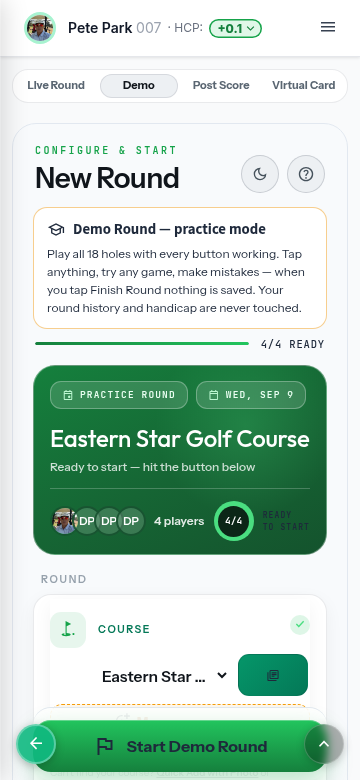
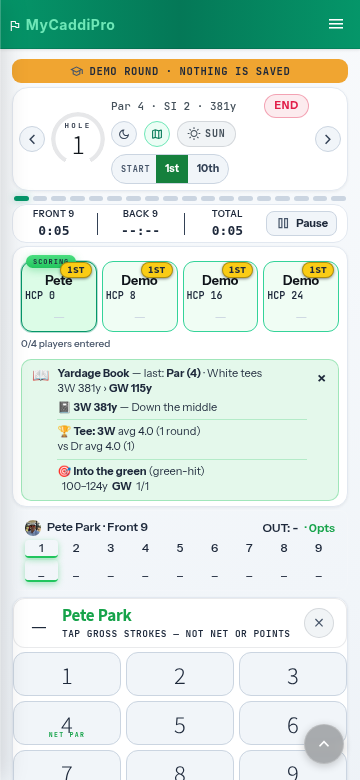
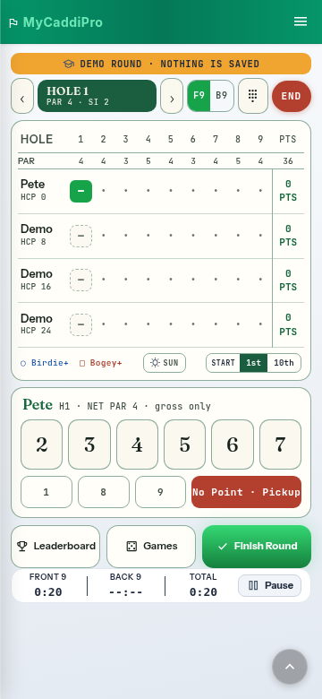
A four-up segmented rail, built from tokens already on these screens: the same rounded rail as the Live / Demo / Post Score pills, the same solid-green active state as the F9 / B9 toggle. Every option is visible and one tap away — no cycling, no hunting.
#16a34a active, white text. No purple, stock palette, contrast floor held.ThemeMode. White/Dark/Glass are the base axis; picking Sun turns Glass off and Glass turns Sun off, exactly as it does now.The rail lives directly under the Live / Demo / Post Score / Virtual pills and stays there through the whole round. Same pixel position on Play Golf, on Start Round, on the keypad and on the card — you never look for it twice. One insertion point in the code, so the card view gets it for free.
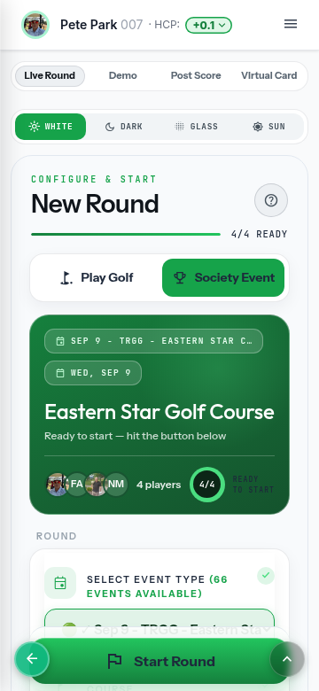
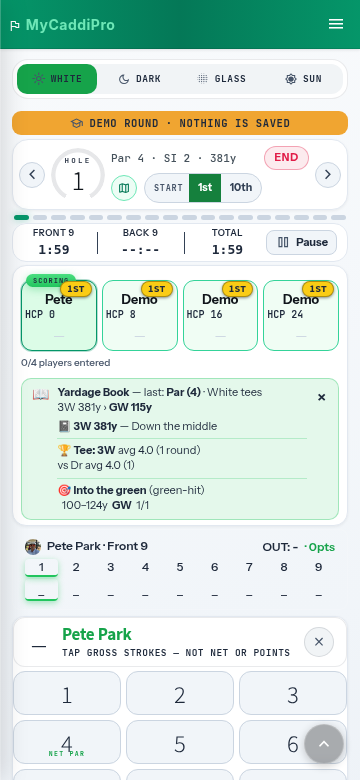
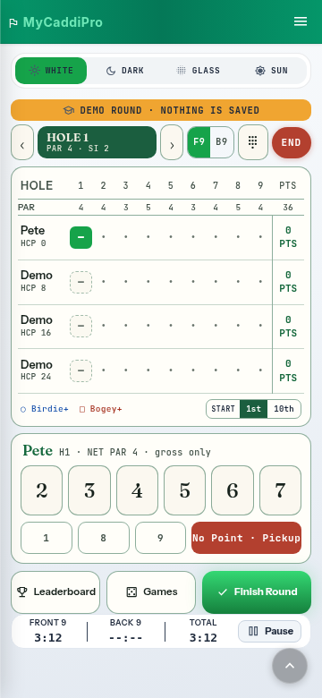
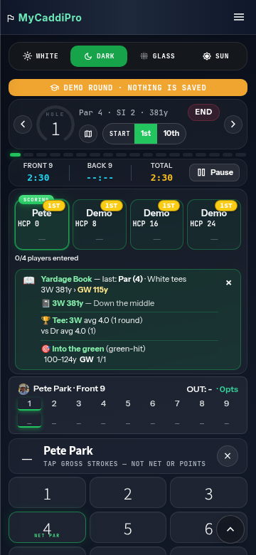
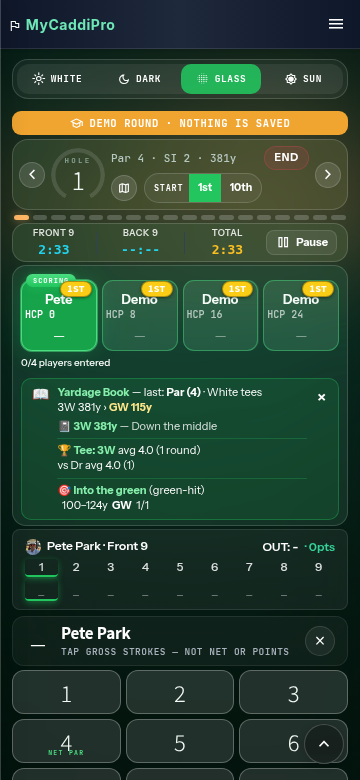
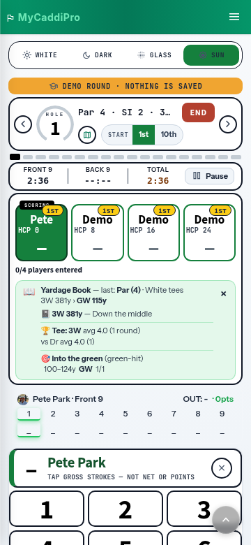
#scorecardModeToggle. No surgery inside the instrument cluster or the card legend.Same rail, but on the round screen it sits under the hole cluster instead of at the top — closer to the thing you are actually looking at, further from the top of the page. Costs the same 40px; needs two insertion points (keypad and card) instead of one.
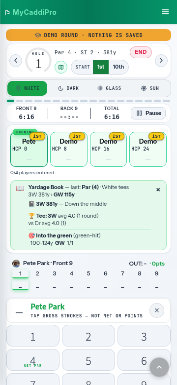
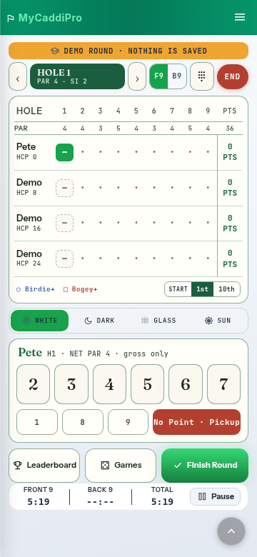
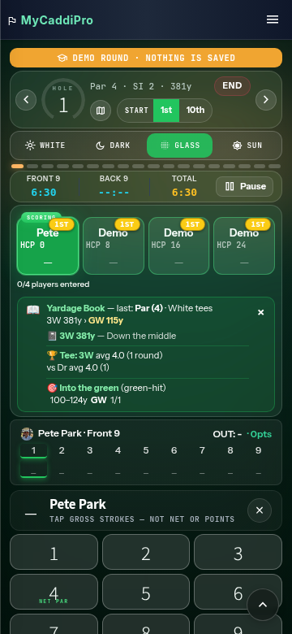
Icons only, dropped into the row that already holds the map button. Costs no vertical space at all — it lands where the moon and the SUN pill used to be. The trade is legibility: no labels, and the White and Sun glyphs are close cousins at 14px.
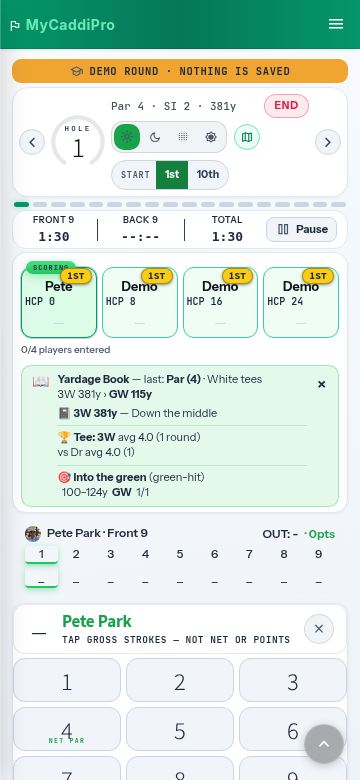
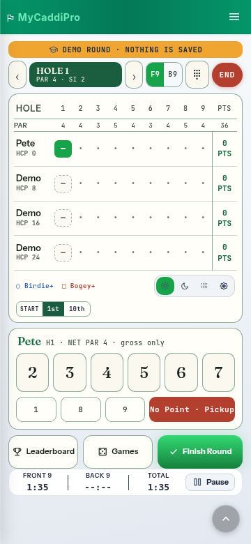
Sun is gated to an active round and every Sun rule is scoped to the scoring engine. So the moment SUN appears on Play Golf and Start Round, tapping it lights the segment but the screen does not change — and a golfer standing in the sun cannot read the setup screen either. Two ways to close it; the second is the honest one.
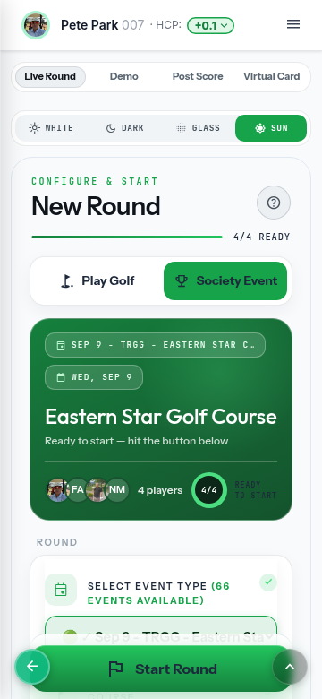
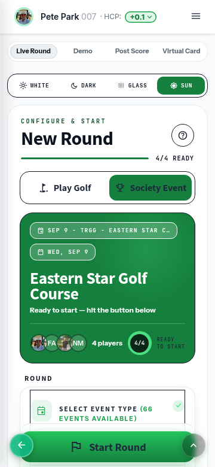
ThemeMode.sunAvailable() from .round-active to the scorecard tab — the same blast radius Glass already uses.#scorecardStartSection, mirroring the pass the scoring engine already has.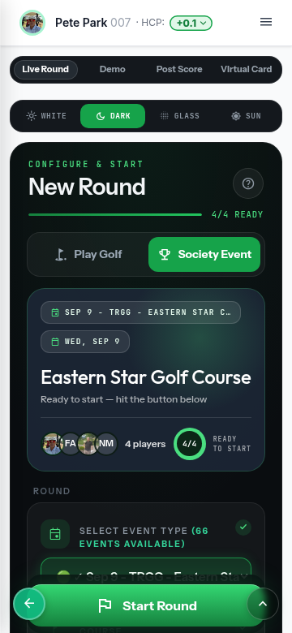
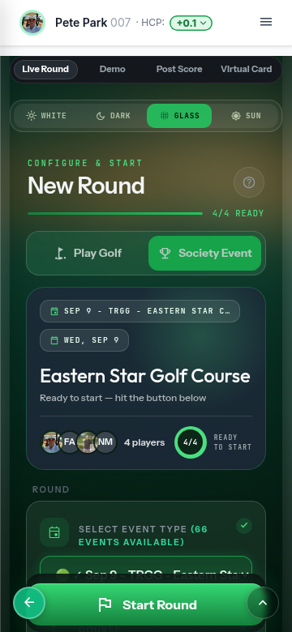
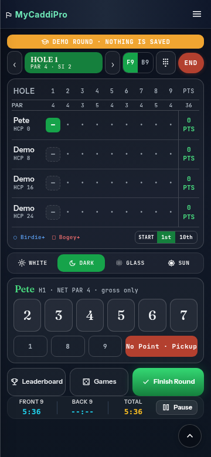
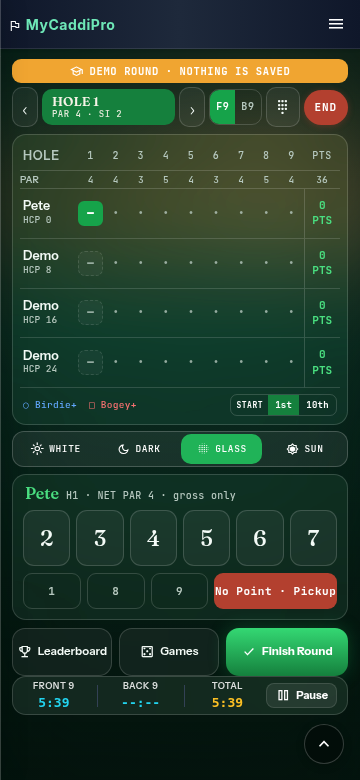
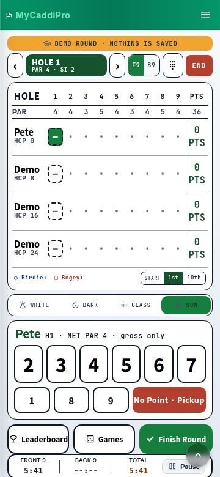